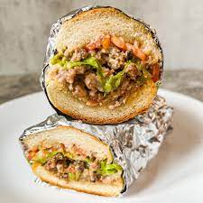

Chopped Cheese Sandwich

Description
This sandwich was invented in New York City and is kind of like a cheesesteak. Toppings, if any, are optional. Usually this sandwich is cooked on a griddle but a skillet can be used at home.
Ingredients
- 2 pounds (80/20) ground beef
- 1 white onion, chopped
- 1 jar adobo seasoning
- 6 hoagie rolls
- 12 slices American cheese
- 1 bag shredded iceberg lettuce
- Any other toppings as desired (mayo, tomatoes, etc)
Steps
- Cook the ground beef over medium-high heat. You can also use hamburger patties to have evenly measured portions. I use about 2 hamburgers per sandwich.
- Add the onions and sprinkle an generous amount of adobo seasoning on the beef.
- Cook for another 4 minutes until the onions are softened on medium heat.
- Add two slices of cheese over top of the meat and onions.
- As the meat is cooked through and getting semi-crispy, toast the buns for a minute or so.
- Chop the meat and vegetable mixture up, then scoop and place into the bun. I suggest a thick bun that is toasted to give enough structure to hold the sandwich contents.